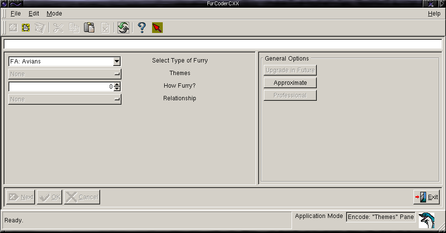

| Simple modifications |
| General Option Command Buttons |
| Complex Modifications |

The left-hand pane contains the widgets for selecting code options. These are mostly option menu buttons, with one cyclic spin button for entering the numerical option, and list boxes for making selections of general categories: the Furry species, and real-life occupation. These entries are selected simply by clicking on the desired option. For the most part, these menus are designed to activate in order. Of course, that doesn't apply for those items that consist of/allow multiple selections. These menus will remain active. This is done to assist the user in making entries in the proper order. When a selection is made, it is displayed in the code line edit (just below the toolbar). If you don't like your selection, click the "Cancel" button. This will remove the entry and reset the menu buttons so that another choice may be made. Until the "Next" button is clicked, the current code item is not finalized. At the end of the menu list, click "Next" to move onto the next menu pane. There are six menu groups to complete the code. The partition between panes may be moved to allow for more convenient viewing of the descriptive labels in the menu selection panes.
Item specific code modifiers are located at the bottom of the drop-down menu pane. More general modifiers are selected via the command buttons located to the right of the menu pane. If a menu item modifier either isn't apropos or requires that a selection be made first, that modifier will be inactive and greyed-out. Modifiers that are contained within their own menus will behave the same way: active if apropos, and skipped in those cases where they are not. If these modifiers aren't what's desired, the modifier may be added manually. These would include the specific animal modifier (e.g. [Silver Fox] in the Furry species category, or a23, in the age category).
For multiple options, once selected, that option is greyed out to prevent making a certain selection twice.
Exact Entries:
Should you want to make an exact entry, such as your actual age, add a specific species to the Furry Species category, etc., you first select the option from the menu. In this case, it won't matter what you select. Then use the cursor and backspace or delete keys to remove the +++'s and type in the real age: "a23", or an exact species (see the on-line help for more information about the Fur Code itself). Any code item may be altered anytime you desire, simply by using the code line edit. You would do this to correct a bad entry, or add an exact specifier. The code items may be modified until the "Next" button is clicked.
Multiple Selections:
Multiple selections (Furry species and RL occupation categories) are handled automatically. Once you have all your Furry species options and mods in place, simply select another species from the list box. The multi-select character ('/') is added, the prefix removed, and the new item appended to the code. From that point onwards, just make your selections from the menus. There is no need to add any characters manually. The RL Occupations code item works in a similar manner.
Cancelling:
If you don't like the most recent code item, you can use the "Cancel" button to remove it and reset the menus for a different selection.
Finalizing:
Once you have entered options for all categories, the "OK" command button finalizes your new code, and completes the project. At this point, you may elect to save to disk, copy to the system clipboard, start a new project, and/or exit the application. On exit, you will receieve a reminder, and one final chance to save your code if you haven't already. If you haven't saved it, you will lose it when the app terminates.